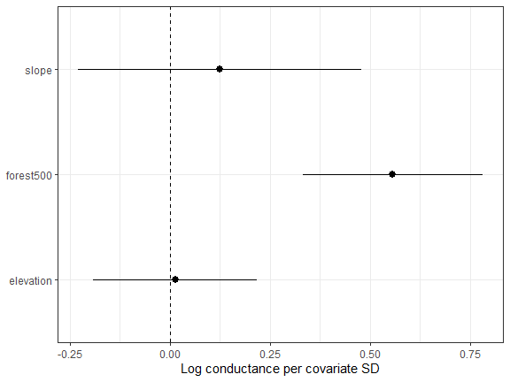
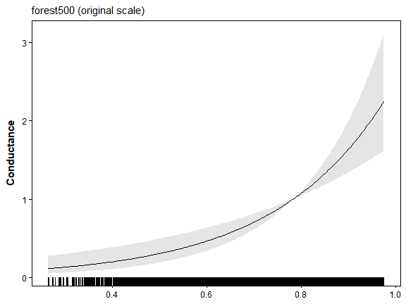
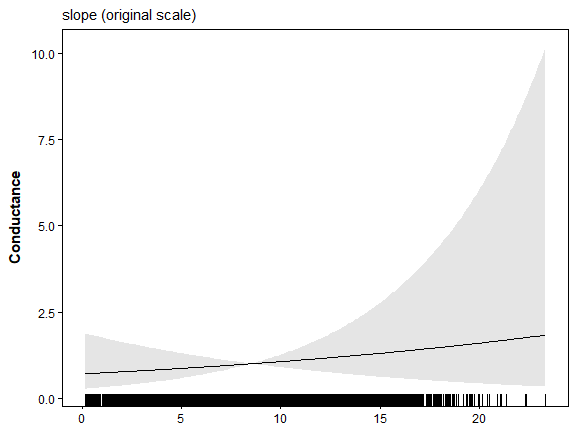
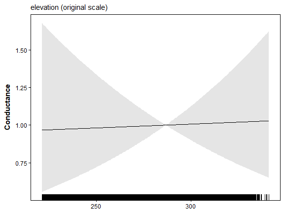
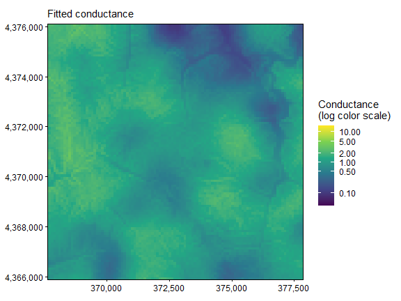
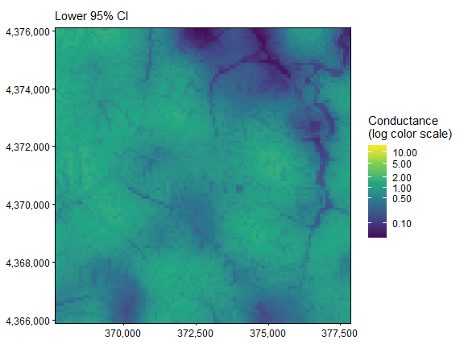
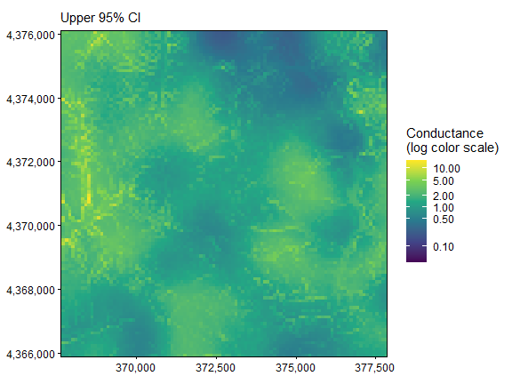
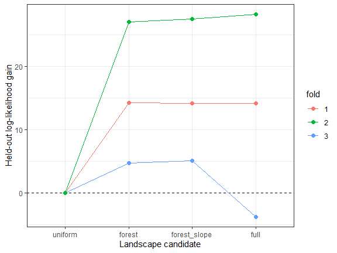

04. Model Comparison and Selection in terradish
Bill Peterman
Source:vignettes/v04-model-comparison.Rmd
v04-model-comparison.RmdThe displayed results and figures in this guide were computed from
the executable R Markdown source shipped with the package. Routine
package checks use these precomputed results to keep the CRAN check time
modest. To rerun every code chunk, copy
system.file("vignette-source", "v04-model-comparison.Rmd", package = "terradish")
to a writable directory and render that copy with
rmarkdown::render().
Goal. Decide whether extra terrain variables are useful, using a candidate table, information criteria, and held-out scores.
vignette("v12-data-generation", package = "terradish")
explains the landscapes, SLiM histories, sampling, and matched markers
used in these examples.
What evidence should choose a model?
A larger model can fit the observed genetic data better yet predict
new ponds less well. Here you compare prespecified landscape hypotheses
with information criteria, a nested likelihood-ratio test, and
whole-pond spatial validation. Start with vignette("v01-getting-started", package = "terradish")
for raw genotypes, response construction, and measurement
parameters.
In the Ohio pond simulation, forest context at 500 m affects gene flow, while slope and elevation have no direct effect. They are realistic candidates on the same terrain, and their spatial association with forest can still produce apparent fitted effects. In an empirical study the mechanism would be unknown, so competing hypotheses and validation matter more than recovering a familiar coefficient sign.
Keep the comparison contract fixed: observed response, sampling units and order, likelihood family, graph domain and adjacency, and assumed Wishart information. Do not mix SNP and microsatellite likelihoods, or covariance and distance representations, in one information-criterion table.
Prepare one response and one landscape
library(terradish)
library(terra)
library(ggplot2)
data(ohio_ponds)
ponds <- ohio_ponds$ponds
g <- factor(ohio_ponds$samples$pond, levels = ponds$pond)
N <- 2 * as.numeric(table(g))
S <- cov_from_biallelic(rowsum(ohio_ponds$snp, g, reorder = FALSE)[ohio_ponds$ponds$pond, , drop = FALSE], N) / N[1]
x <- c(unwrap(ohio_ponds$covariates), unwrap(ohio_ponds$forest500))
surface <- conductance_surface(scale_covariates(x), ponds[c("x", "y")], directions = 8)
# Correlation describes the full raster domain, not independent sampled ponds.
round(cor(surface$x[c("forest500", "slope", "elevation")]), 2)
#> forest500 slope elevation
#> forest500 1.00 0.33 0.39
#> slope 0.33 1.00 0.00
#> elevation 0.39 0.00 1.00How to read the output. All three covariates are standardized over the whole landscape, so each coefficient is the change in log conductance per one SD, holding the other included terms fixed. Forest is correlated with slope (0.33) and elevation (0.39), so either can absorb part of the forest signal. Correlation among thousands of raster cells does not add independent genetic information.
Declare the biological candidates
Each extension keeps the active forest hypothesis:
| Candidate | Landscape hypothesis | Conductance parameters |
|---|---|---|
uniform |
Uniform graph with spatial separation | None |
forest |
Forest context alone | One |
forest_slope |
Forest plus an additional slope association | Two |
full |
Forest, slope, and elevation associations | Three |
The measurement model adds its graph weight and log diagonal variance
to every candidate, so K in a comparison table exceeds the
number of covariates. Here nu = 40 is an information
assumption, not 2,500 independent SNPs.
The four candidate formulas and the optimizer settings below are reused in every later section:
formulas <- list(uniform = S ~ 1, forest = S ~ forest500,
forest_slope = S ~ forest500 + slope,
full = S ~ forest500 + slope + elevation)
control <- NewtonRaphsonControl(maxit = 200, ctol = 1e-8, ftol = 1e-8)The collapsed block that follows fits each candidate from up to three
starting values and creates fits, the named list of four
fitted models that every later section uses. Expand it to see the code
and the table of starting attempts.
Fit the candidates and inspect all starting attempts (code and output)
# Retain every starting attempt, including errors and nonconverged fits.
attempts <- list()
fit_candidate <- function(formula, label) {
labels <- attr(terms(formula), "term.labels")
rhs <- if (length(labels)) reformulate(labels) else ~ 1
defaults <- attr(loglinear_conductance(rhs, surface$x), "default")
starts <- if (length(attr(terms(formula), "term.labels"))) c(-0.5, 0, 0.5) else 0
valid_fits <- list()
for (start in starts) {
theta <- defaults
theta[] <- start
fit <- tryCatch(terradish(formula, surface,
measurement_model = wishart_covariance, nu = 40, theta = theta,
optimizer = "bfgs", control = control), error = identity)
valid <- !inherits(fit, "error") && isTRUE(fit$convergence$code == 0) &&
isTRUE(fit$fit$subproblem$convergence == 0) && is.finite(as.numeric(logLik(fit)))
attempts[[length(attempts) + 1L]] <<- data.frame(model = label, start,
valid, logLik = if (inherits(fit, "error")) NA_real_ else as.numeric(logLik(fit)),
diagnostic = if (inherits(fit, "error")) conditionMessage(fit) else
paste("outer", fit$convergence$code, "nuisance", fit$fit$subproblem$convergence))
if (valid) valid_fits[[length(valid_fits) + 1L]] <- fit
}
if (!length(valid_fits)) stop("No converged fit for ", label)
valid_fits[[which.max(vapply(valid_fits, function(z) as.numeric(logLik(z)), numeric(1)))]]
}
fits <- Map(fit_candidate, formulas, names(formulas))
do.call(rbind, attempts)
#> model start valid logLik diagnostic
#> 1 uniform 0.0 TRUE 103.7619 outer 0 nuisance 0
#> 2 forest -0.5 TRUE 141.3124 outer 0 nuisance 0
#> 3 forest 0.0 TRUE 141.3124 outer 0 nuisance 0
#> 4 forest 0.5 TRUE 141.3124 outer 0 nuisance 0
#> 5 forest_slope -0.5 TRUE 141.5479 outer 0 nuisance 0
#> 6 forest_slope 0.0 TRUE 141.5479 outer 0 nuisance 0
#> 7 forest_slope 0.5 TRUE 141.5479 outer 0 nuisance 0
#> 8 full -0.5 TRUE 141.5550 outer 0 nuisance 0
#> 9 full 0.0 TRUE 141.5550 outer 0 nuisance 0
#> 10 full 0.5 TRUE 141.5550 outer 0 nuisance 0How to read the output. Compare optima only after both conductance and nuisance fitting converge. Agreement across starts shows numerical stability only. Failed attempts stay in the table but are never used as optima. If valid starts disagree materially, investigate the likelihood surface before interpreting. Do not change stopping thresholds to make an unresolved fit appear converged.
Read information criteria with their assumptions
ranking <- aic_table(fits, mod_names = names(fits))
ranking
#> model K AIC Delta_AIC AIC_wt Cum.wt loglik converged boundary
#> 2 forest 3 -276.6249 0.0000 0.6105 0.6105 141.3124 TRUE FALSE
#> 3 forest_slope 4 -275.0958 1.5291 0.2842 0.8947 141.5479 TRUE FALSE
#> 4 full 5 -273.1100 3.5149 0.1053 1.0000 141.5550 TRUE FALSE
#> 1 uniform 2 -203.5238 73.1011 0.0000 1.0000 103.7619 TRUE FALSE
aic_table(fits, mod_names = names(fits), AICc = TRUE)
#> model K AIC AICc Delta_AICc AICc_wt Cum.wt loglik
#> 2 forest 3 -276.6249 -275.4249 0.0000 0.7378 0.7378 141.3124
#> 3 forest_slope 4 -275.0958 -272.9905 2.4344 0.2184 0.9562 141.5479
#> 4 full 5 -273.1100 -269.7766 5.6483 0.0438 1.0000 141.5550
#> 1 uniform 2 -203.5238 -202.9524 72.4725 0.0000 1.0000 103.7619
#> converged boundary
#> 2 TRUE FALSE
#> 3 TRUE FALSE
#> 4 TRUE FALSE
#> 1 TRUE FALSE
aic_table(fits, mod_names = names(fits), BIC = TRUE)
#> model K AIC BIC Delta_BIC BIC_wt Cum.wt loglik converged
#> 2 forest 3 -276.6249 -273.0907 0.0000 0.7625 0.7625 141.3124 TRUE
#> 3 forest_slope 4 -275.0958 -270.3836 2.7072 0.1970 0.9595 141.5479 TRUE
#> 4 full 5 -273.1100 -267.2197 5.8710 0.0405 1.0000 141.5550 TRUE
#> 1 uniform 2 -203.5238 -201.1677 71.9230 0.0000 1.0000 103.7619 TRUE
#> boundary
#> 2 FALSE
#> 3 FALSE
#> 4 FALSE
#> 1 FALSEHow to read the tables. AIC is
,
so lower is better and each extra parameter costs 2 units.
Delta_AIC is the distance from the best model, and
AIC_wt is relative support within this candidate set, not
the probability that a model is the true mechanism. Models within 2
units of the best usually have comparable support, with one exception. A
model that adds one parameter to the best model and gains almost no
log-likelihood lands within 2 units only because the penalty for one
parameter is 2. That extra parameter is uninformative, and the larger
model is not a real competitor. Here forest leads (weight
0.61). forest_slope sits 1.5 units behind, but it adds
slope and raises the log-likelihood by only 0.24, so it is this
exception, not a second supported model. full trails (3.5
units), and uniform has no support. converged
is TRUE only when both optimizers finished, and
boundary flags estimates at a limit.
AICc and BIC use the 24 ponds, not the 276 pairs or 2,500 SNPs, as
the sample size. Under both, forest_slope falls more than 2
units behind forest. Neither corrects for an uncertain
nu, so check prediction too.
Optional: how assumed information changes a ranking
information_sensitivity <- lapply(c(20, 40, 80, 2500), function(nu) {
scaled_fits <- lapply(fits, terradish_rescale_nu, nu = nu)
tab <- aic_table(scaled_fits, mod_names = names(fits))
data.frame(nu, tab[, c("model", "K", "AIC", "Delta_AIC")])
})
do.call(rbind, information_sensitivity)
#> nu model K AIC Delta_AIC
#> 2 20 forest 3 -135.3124 0.0000
#> 3 20 forest_slope 4 -133.5479 1.7646
#> 4 20 full 5 -131.5550 3.7575
#> 1 20 uniform 2 -99.7619 35.5505
#> 21 40 forest 3 -276.6249 0.0000
#> 31 40 forest_slope 4 -275.0958 1.5291
#> 41 40 full 5 -273.1100 3.5149
#> 11 40 uniform 2 -203.5238 73.1011
#> 22 80 forest 3 -559.2498 0.0000
#> 32 80 forest_slope 4 -558.1916 1.0582
#> 42 80 full 5 -556.2199 3.0298
#> 12 80 uniform 2 -411.0477 148.2021
#> 33 2500 forest_slope 4 -17685.4860 0.0000
#> 43 2500 full 5 -17684.3732 1.1127
#> 23 2500 forest 3 -17658.0557 27.4303
#> 13 2500 uniform 2 -12966.2394 4719.2466Rescaling nu leaves the coefficients unchanged but
multiplies every log-likelihood, so larger nu makes small
likelihood gains outweigh the complexity penalty. The
nu = 2500 rows, which treat every linked SNP as
independent, favor extra terms for that reason alone, so the SNP count
is not a safe default.
Use a likelihood-ratio test only for a nested question
The forest-only model is nested in the full model, because setting the slope and elevation coefficients to zero recovers it. A likelihood-ratio test can therefore ask whether those two terms together add support.
anova(fits$forest, fits$full)
#> Likelihood ratio test: chi-square (2 df)
#> Null: ~ forest500
#> Alt: ~ forest500 + slope + elevation
#> logLik Df ChiSq Df(ChiSq) Pr(>Chi)
#> Null 141.31 3
#> Alt 141.56 5 0.48508 2 0.7846How to read the output. ChiSq is twice
the log-likelihood gain (0.49), on 2 degrees of freedom because the full
model estimates two more parameters (Df 5 versus 3). With p
= 0.78, the extra terms add nothing detectable, so keep the forest-only
model. The statistic scales with nu, so a larger assumed
nu would shrink this p-value without changing the fit.
Report the nu you used. Use the test only for nested models
fitted to the same response, likelihood, and nu, because
anova() stops with an error otherwise.
Inspect conditional associations
interval <- confint(fits$full)
coefficients <- data.frame(variable = names(coef(fits$full)),
estimate = as.numeric(coef(fits$full)), lower = interval[, 1], upper = interval[, 2])
ggplot(coefficients, aes(variable, estimate)) +
geom_hline(yintercept = 0, linetype = 2) +
geom_pointrange(aes(ymin = lower, ymax = upper)) +
coord_flip() + theme_bw() + labs(x = NULL, y = "Log conductance per covariate SD")
How to read the plot. Exponentiate a coefficient to get the relative conductance ratio for a one-SD contrast, holding the other covariates constant. Each association depends on the covariates included, their spatial support, and the response. Correlation and finite genetic history can give slope and elevation nonzero estimates even without simulated effects. An association is not evidence that habitat caused the genetic pattern.
A marginal conductance plot shows each association as a curve, averaging over the observed values of the other predictors:
plot(fits$full, type = "marginal", data = surface)


How to read these panels. An upward curve indicates
increasing conductance. Each panel title ends with “(original scale)”.
The graph was built from scale_covariates() output, so the
plot converts the x-axis back to the covariate’s own units (forest
fraction for forest500), while the coefficients stay per
SD. These are associations within the full model, not separate
single-predictor fits, and wide bands or sparse rug marks flag ranges
needing caution. Set marginal_covariates = "forest500" to
show only forest, or support = "focal" to evaluate only
values at sampled cells. Neither refits the model. Getting Started
demonstrates the corresponding type = "marginal_response"
genetic-response curve.
maps <- plot(fits$full, type = "surface", data = surface)
C <- conductance(surface, fits$full)
map_limits <- range(terra::values(C), na.rm = TRUE)
# Change only the color mapping. Retain every cell and the same limits in
# the estimate and both interval panels so their colors remain comparable.
for (p in maps) {
print(p + scale_fill_viridis_c(
trans = "log10", limits = map_limits,
breaks = c(0.01, 0.1, 0.5, 1, 2, 5, 10, 20),
name = "Conductance\n(log color scale)"
))
}


The map combines forest, slope, and elevation in one surface, not three independent resistance surfaces. Its intervals describe coefficient uncertainty, not all uncertainty in the ecological interpretation. As in Getting Started, the three panels share one logarithmic color scale.
Compare spatial prediction
The provided blocks contain whole ponds, were fixed before fitting, and have no known immediate pedigree relationships across blocks (the Gaussian guide shows the check). The complete landscape and the globally ascertained panel stay fixed, so this tests transfer to held-out ponds within the same observed domain.
terradish_cv_folds() scores only pairs of ponds within
the same held-out block. It never scores a pair that joins a training
pond to a test pond, so each block’s score is the log-likelihood of that
block’s own covariance under parameters learned from the other
blocks.
cv <- terradish_cv_folds(surface, formulas, folds = ponds$fold,
model = wishart_covariance, nu = 40, nuisance = "fixed",
optimizer = "bfgs", keep_fits = "none", control = control)
cv$results[, c("model", "fold", "loglik", "loglik_gain", "error")]
#> model fold loglik loglik_gain error
#> 1 uniform 3 58.752411 0.000000
#> 2 uniform 1 68.908763 0.000000
#> 3 uniform 2 -33.318439 0.000000
#> 4 forest 3 63.474314 4.721903
#> 5 forest 1 83.096136 14.187373
#> 6 forest 2 -6.286712 27.031727
#> 7 forest_slope 3 63.829375 5.076963
#> 8 forest_slope 1 83.046425 14.137662
#> 9 forest_slope 2 -5.842750 27.475689
#> 10 full 3 54.949998 -3.802414
#> 11 full 1 83.067260 14.158497
#> 12 full 2 -5.127193 28.191246
cv$summary
#> model folds failed n_folds_ok total_loglik common_folds_total
#> 1 forest_slope 3 0 3 141.03305 141.03305
#> 2 forest 3 0 3 140.28374 140.28374
#> 3 full 3 0 3 132.89006 132.89006
#> 4 uniform 3 0 3 94.34274 94.34274
#> n_common_folds between_repeat_sd mean_loglik total_loglik_gain
#> 1 3 NA 47.01102 46.69031
#> 2 3 NA 46.76125 45.94100
#> 3 3 NA 44.29669 38.54733
#> 4 3 NA 31.44758 0.00000
#> mean_loglik_gain se_difference mean_difference within_one_se
#> 1 15.56344 0.0000000 0.0000000 TRUE
#> 2 15.31367 0.1519243 -0.2497704 FALSE
#> 3 12.84911 3.0890415 -2.7143281 TRUE
#> 4 0.00000 6.5051353 -15.5634379 FALSEHow to read these outputs. First confirm that
error is empty and n_folds_ok is 3 for every
model, because a failed block leaves a model’s total as NA.
Each model is fitted to two blocks and scored on the third, with
measurement parameters fixed at their training values. Larger held-out
log-likelihood is better, and loglik_gain is the
improvement over uniform conductance in the same block. In
cv$summary, mean_difference is a model’s
average per-block shortfall from the top model (negative values mean a
lower score), se_difference is the standard error of that
mean across blocks, and within_one_se is TRUE
when the shortfall is no larger than that error. The top model always
shows 0, 0, and TRUE.
With three blocks these standard errors are unstable, so treat
within_one_se as a descriptive tie flag, not a test. Here
forest trails forest_slope by only 0.25 per
block, but so consistently that it is flagged FALSE, while
full trails by 2.7 yet is flagged TRUE because
one poor block inflates its error. Read the per-block scores, and prefer
the simpler model unless the larger one wins clearly in most blocks. By
that rule forest and forest_slope predict
equally well, and both beat full and
uniform.
# Order candidates from simplest to most complex so lines connect neighbors.
cv_plot <- transform(cv$results, model = factor(model, levels = names(formulas)))
ggplot(cv_plot, aes(model, loglik_gain, group = fold, color = fold)) +
geom_hline(yintercept = 0, linetype = 2) + geom_line() + geom_point(size = 2) +
theme_bw() + labs(x = "Landscape candidate", y = "Held-out log-likelihood gain")
How to read the plot. Each line follows one held-out block across the candidates. Forest plus slope has a total held-out score only 0.75 above forest alone, while the full model loses ground sharply in block 3. Slope had no generating effect, so a gain this small is not evidence for a slope mechanism. AIC and blocked prediction answer different questions (fit with a complexity penalty versus transfer to new ponds); here both favor a forest model.
Put the evidence together
| Evidence | Question | Main limitation |
|---|---|---|
| Starting-value checks | Is the fitted optimum numerically reproducible? | Does not validate the mechanism |
| AIC and its alternatives | Which candidate balances fit and complexity? | Conditional on response, model, and effective information |
| Nested likelihood-ratio test | Do specified extra terms improve likelihood? | Requires regularity and a valid nesting argument |
| Spatial prediction | Do training associations transfer to held-out ponds? | Conditional on graph, blocks, panel ascertainment, and scoring rule |
| Simulation truth | Can a workflow recover a declared mechanism? | One simplified simulation is not field validation |
Keep your candidate set small and biologically motivated. Choosing variables, smoothing scales, or spline sizes on all the data and then scoring them on the same blocks inflates the scores, so make those choices inside each training set.
Quick reference: a complete candidate comparison
library(terradish)
library(terra)
data(ohio_ponds)
g <- factor(ohio_ponds$samples$pond, levels = ohio_ponds$ponds$pond)
N <- 2 * as.numeric(table(g))
S <- cov_from_biallelic(rowsum(ohio_ponds$snp, g, reorder = FALSE)[ohio_ponds$ponds$pond, , drop = FALSE], N) / N[1]
x <- c(unwrap(ohio_ponds$covariates), unwrap(ohio_ponds$forest500))
graph <- conductance_surface(scale_covariates(x), ohio_ponds$ponds[c("x", "y")],
directions = 8)
f <- list(uniform = S ~ 1, forest = S ~ forest500,
forest_slope = S ~ forest500 + slope,
full = S ~ forest500 + slope + elevation)
ctl <- NewtonRaphsonControl(maxit = 200, ctol = 1e-8, ftol = 1e-8)
# 1. Fit each declared candidate; use the multiple-start audit above in practice.
fits <- lapply(f, function(z) terradish(z, graph,
measurement_model = wishart_covariance, nu = 40, optimizer = "bfgs", control = ctl))
# 2. Rank fits; 'converged' must be TRUE. Models within 2 AIC units have
# comparable support, unless the larger one only adds a parameter that
# leaves the log-likelihood almost unchanged (an uninformative parameter).
aic_table(fits, mod_names = names(fits))
anova(fits$forest, fits$full) # do slope and elevation add anything?
# 3. Score the same held-out ponds with all training parameters held fixed.
cv <- terradish_cv_folds(graph, f, ohio_ponds$ponds$fold,
model = wishart_covariance, nu = 40, nuisance = "fixed",
optimizer = "bfgs", control = ctl)
cv$results # per-block held-out log-likelihood; larger is better
cv$summary # totals, shortfall from the best model, and its standard errorSummary of key functions
| Function | Purpose |
|---|---|
aic_table() |
Rank compatible models by AIC, AICc, or BIC |
terradish_rescale_nu() |
Examine the dependence of inference on assumed information |
anova() |
Compare nested compatible likelihood models |
confint() |
Read intervals on coefficient and scale parameters |
terradish_cv_folds() |
Compare whole-site predictive scores on a fixed graph |
See also
-
vignette("v01-getting-started", package = "terradish"): response construction, graph conventions, and measurement parameters. -
vignette("v07-gaussian-scale-optimization", package = "terradish"): scale identification, profiles, and fixed-versus-estimated context. -
vignette("v06-spline-conductance", package = "terradish"): nonlinear shape, basis coefficients, and predictive checks. -
vignette("v05-categorical-conductance", package = "terradish"): nominal class coding and reference contrasts. -
vignette("v02-wishart-covariance", package = "terradish"): how the assumednudrives standard errors, tests, and AIC. -
vignette("v08-ibe-ibr-workflow", package = "terradish"): adding environmental differences between sites to the comparison. -
vignette("v03-mlpe-pairwise-distance", package = "terradish"): pairwise genetic distances with MLPE, compared with the same AIC and cross-validation tools. -
vignette("v10-simulation-design", package = "terradish"): simulating responses to check whether a comparison can detect an effect.